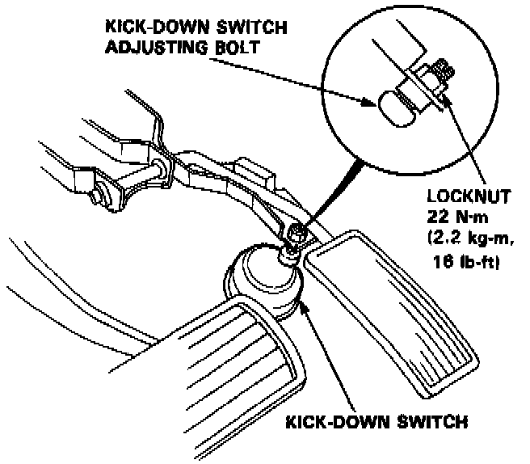
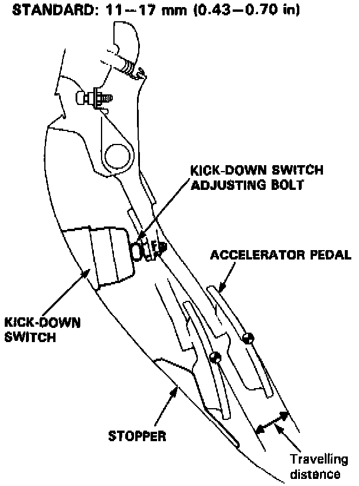

Shift Solenoid: Adjustments

1. Loosen the locknut.

2. Adjust the length of the kick-down switch adjusting bolt so that the accelerator pedal travelling distance between the point where the bolt first contacts with the kick-down switch and the point where the accelerator pedal hits the stopper becomes the specified value.
3. Tighten the locknut.